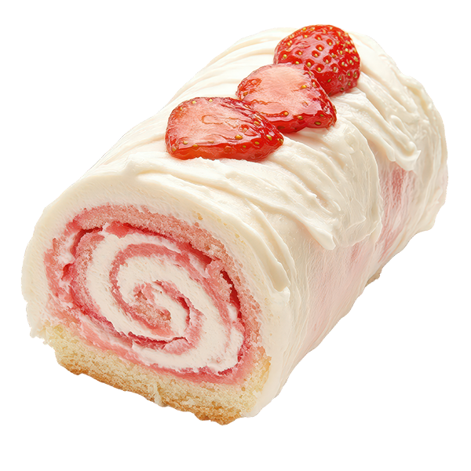

Strawberry Swiss Roll Recipe
A fluffy, golden sponge cake rolls into a vibrant swirl of sweet-tart strawberry filling, dotted with real fruit bits, all wrapped in a creamy embrace of whipped cream. Each slice of this delicious roll delivers a perfect balance of airy cake, and juicy strawberries—pure bliss in every bite.
Ingredients
- 4 large room-temperatue eggs
- ½ cup granulated sugar
- 2 teaspoon vanilla extract
- ½ teaspoon baking powder
- ½ cake flour
- ¼ teaspoon salt
- 1½ cups of diced strawberries
- 1½ cups of cold heavy cream
- ½ cup powdered sugar
Instructions
- Preheat your oven to 350°F. Prepare a 13×9 baking sheet by lining it with parchment paper, then set it aside
- In a mixing bowl, utilize either a hand mixer or a stand mixer equipped with a whisk attachment to beat 4 eggs at high speed for approximately one minute until they become foamy. Gradually incorporate ½ cup of granulated sugar and 1 teaspoon of vanilla extract, continuing to beat at high speed for 6 to 7 minutes, or until the mixture is thick, pale, and has tripled in volume.
- In a separate bowl, combine ½ cup of all-purpose flour, ½ teaspoon of baking powder, and ¼ teaspoon of salt. Sift this dry mixture into the egg mixture in three additions. Gently fold the ingredients together with a spatula until a smooth consistency is achieved, ensuring there are no pockets of flour. Take care not to overmix.
- Transfer the batter onto the prepared baking sheet, using a spatula to spread it evenly.
- Bake in the preheated oven for approximately 10 to 12 minutes, or until the top is golden and a toothpick inserted into the center comes out clean.
- While the cake is baking, lay a clean towel on the counter and dust it with powdered sugar to prevent the cake from sticking when rolled.
- Once the cake is finished baking, use a paring knife to gently loosen it from the edges of the pan. Invert the cake onto the prepared towel (with the top side facing down) and carefully remove the parchment paper. Roll the cake within the towel and allow it to cool.
- During the cooling process, finely chop the strawberries.
- Using a hand or stand mixer with a whisk attachment, whip cold heavy cream, powdered sugar, and vanilla extract until stiff peaks form.
- After the cake has cooled, carefully unroll it and remove it from the towel. Spread two-thirds of the whipped cream evenly over the surface, then sprinkle the diced strawberries on top. Roll the cake back up and place it on a serving platter.
- For decoration, dust the top of the dessert with 2 tablespoons of powdered sugar. With the remaining one-third of the whipped cream, pipe four large swirls on top and garnish each swirl with half a strawberry.
- Refrigerate the dessert for a few hours prior to serving.
Enjoy!